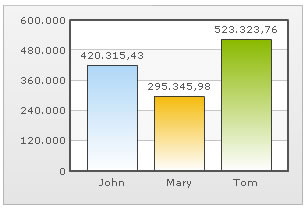

| Using formatted input numbers |
In some countries, commas are used as decimal separators and dots as thousand separators. But, if you directly specify such numbers in FusionCharts XT XML/JSON, it will give an error while converting to number. FusionCharts XT lets you specify numbers in your own format in XML/JSON. Consider the data below: |
<chart inThousandSeparator='.' inDecimalSeparator=',' formatNumberScale='0'> <set label='John' value='420.315,43' /> <set label='Mary' value='295.345,98' /> <set label='Tom' value='523.323,76' /> </chart> {
|
In this data, we are providing the numbers in the non-standard convention - that is, we have used dot as the thousand separator and comma as the decimal separator (as followed in some European countries). Now, to make sure that FusionCharts XT reads these numbers in the right way, we convey our input decimal and thousand separator characters as under: |
|
This tells FusionCharts XT that it should treat dot in the input numbers as thousands (instead of normal decimals) and comma as decimals. Note that this feature does NOT work in Zoom Line chart to optimize it for high dataset volume. In that chart, you will have to specify numbers in standard format (using . as decimal separator and no commas in number). However, output number formatting (that is, the way numbers are shown on chart) can be configured fully. When you now view this chart, you will get the following output: |
You can see that FusionCharts XT has interpreted the numbers properly and automatically converted the numbers into the standard format. If you want to output the number again in the non-conventional format, you can use the following XML/JSON: |
<chart inThousandSeparator='.' inDecimalSeparator=',' thousandSeparator='.' decimalSeparator=',' formatNumberScale='0'> <set label='John' value='420.315,43' /> <set label='Mary' value='295.345,98' /> <set label='Tom' value='523.323,76' /> </chart> {
|
In the above data we are specifying custom characters for both input and output formats. When you now see the chart, you will get something as under: |
|  |